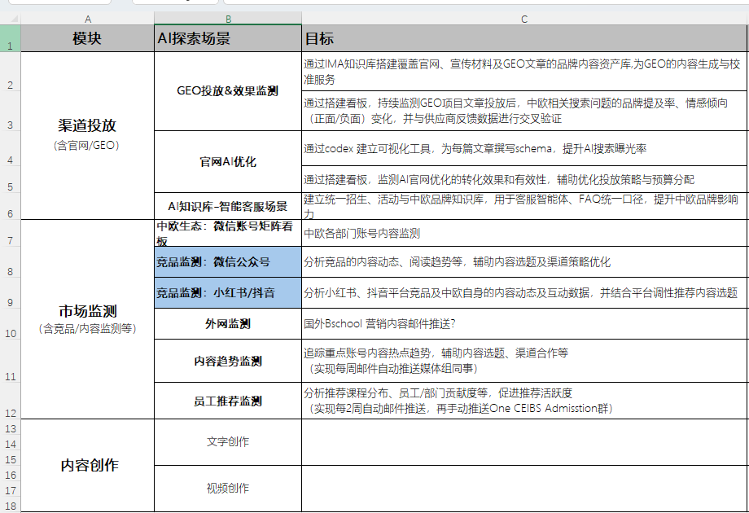

AI Agent
工作流
训练营.
从 Prompt 试错到 Spec-Driven Workflow，用 Codex / WorkBuddy 把市场工作变成可复用、可协作、可迭代的 AI 编排系统。
王林 LincolnMindsLeap 创始人 · Founders Space 全球合伙人

AI Agent 时代，市场部门的效率提升不再靠“多试几个 Prompt”，而要靠一套 结构化工作流体系。
The team learns to turn repeatable marketing work into specs, skills, workflows, memory, and measurable outputs.
市场部门不是少做一点事，而是换一种组织产能的方式Agentic marketing turns scattered tasks into repeatable operating loops.
品牌内容资产库
把官网、项目介绍、FAQ、校友故事、教授观点和活动素材变成 Agent 可调用的组织记忆。
官网 AI / GEO 优化
为文章和项目页生成 FAQ、摘要、Schema、AI 问答口径和搜索可见度优化建议。
市场监测与研究
持续追踪竞品、渠道、社媒、搜索问答、外网动态，把信息流整理成可行动周报。
内容与视频生产
从活动、访谈、讲座和文章中拆出长文、短视频脚本、字幕、标题、封面与分发素材。
设计与课件产出
基于品牌模板生成海报、活动页、Deck、社媒图和培训材料，并保持风格一致。
站外发布与分发
把同一份内容适配公众号、小红书、视频号、官网、邮件和合作渠道，减少重复改写。
活动运营支持
支持活动 brief、嘉宾介绍、邀请文案、报名页、会后复盘和二次传播内容包。
团队协作与复盘
把经验写成 Spec、Skill 和版本记录，让高频工作可交接、可复现、可持续优化。
我的变化：从管理团队和预算，到管理一组 AI 工作流From operating a large marketing function to building an agentic marketing team.
过去：管几十个人，上亿预算
传统 Marketer 的核心能力，是管理人、预算、渠道、供应商、排期和风险。
现在：创业，全面使用 Agentic Marketing Team
我把很多市场职能拆成可复用 Workflow，让 Agent 帮我持续产出、维护和分发。
网站搭建与自动维护
官网、活动页、内容更新、双语版本、SEO / GEO 结构持续迭代。
海报与 Deck 生产
从 brief 到视觉方向、页面结构、品牌模板和最终可演示材料。
Research 与市场洞察
整理行业资料、竞品动态、专家观点、会议内容和可引用来源。
站外发布与内容分发
把核心内容改写成不同平台的发布版本，跟踪反馈并沉淀模板。
短视频剪辑
从访谈和讲座素材中切片，生成字幕、标题、脚本和分发说明。
短视频制作
把文章、课件、音频、案例变成短视频结构，形成批量生产流程。
半天之后，团队应该带走什么What participants should leave with.
共同语言
理解 Agent、Skill、Workflow、Memory、Markdown、Spec，不再把所有 AI 工作都叫“写提示词”。
一个可用的 Skill 或工作流
每位学员完成 1 个可复用 Skill / Workflow，并能说明使用场景、输入、输出和验收标准。
一套协作方法
学会用 Spec-Driven Development 把需求、素材、标准、验收和复盘写清楚，让 AI 与同事都能接得住。
3.5 小时：认知统一，然后马上动手A practical half-day flow for a marketing team.
共同语言From prompts to an AI operating system for marketing work.
先让团队知道自己在搭什么：不是“会不会问 AI”，而是能不能把高频工作沉淀成可复用系统。
从“会用 AI”到“会编排 AI”The upgrade is operational, not linguistic.
Prompt 试错
- 每个人都有自己的提示词，质量靠经验
- 上下文反复解释，换人就要重来
- 输出标准不稳定，复盘困难
- 素材、品牌语气、历史结果没有进入系统
- 难以让新人接手复杂工作
AI 工作流
- 用 Spec 固化目标、输入、约束和验收
- 用 Skill 封装可复用步骤
- 用 Workflow 串联多个 Agent 与工具
- 用 Memory / 资产库保留组织上下文
- 结果可以复现、协作、迭代、培训新人
运用 AI Agent 的六个基础能力The operating vocabulary behind agentic marketing work.
Context
任务发生的背景：业务目标、受众、品牌语气、素材状态、限制条件和成功标准。
Prompt / Spec
Prompt 是一次请求，Spec 是可复用的工作合同：目标、输入、流程、约束和验收标准。
Memory
组织记忆：品牌资产、历史案例、FAQ、竞品观察、栏目规范和不能踩的边界。
Markdown
AI 最容易读写的工作文档格式，也是 Spec、脚本、页面、课件和知识库的桥梁。
Skill
把“某类任务怎么做”写成可复用说明书，让新人和 AI 都能照着执行。
Workflow
把多个步骤、工具、素材、审批和复盘串起来，形成端到端产出。
AI Agent 的使用方式正在从“感觉驱动”走向“工程化编排”From vibing with code to designing harnesses for repeatable work.
Vibing Code
靠感觉和即时反馈推进：想到什么就让 AI 改什么，速度很快，但上下文容易丢、质量靠个人经验。
Spec-Driven
先写清楚目标、输入、约束、流程和验收标准，再让 AI 执行。重点从“问得巧”转向“定义得准”。
Harness Engineer
设计一套把 Context、Memory、Skill、工具、评估和人工审核串起来的运行装置，让工作流持续复用。
Agent 不是一个“万能助手”，而是一组可以分工协作的执行角色A lead agent coordinates specialized sub-agents, tools, memory, and human review.
Lead Agent
理解最终目标，拆分任务，调度 Sub Agents，合并结果，并在关键节点请求人工确认。
研究型 Sub Agent
读取资料、搜索信息、整理来源，负责事实与上下文输入。
策略型 Sub Agent
判断受众、渠道、竞品与转化目标，把信息转成营销判断。
创作型 Sub Agent
生成文案、页面、脚本、标题、字幕和分发素材。
审校型 Sub Agent
检查事实、品牌语气、合规边界、格式和验收标准。
人工审核节点
对外发布、招生口径、数据结论和品牌风险仍由人做最终判断。
一个成熟市场工作流的五步The repeatable loop behind agentic marketing work.
定义场景Scene
选择高频、重复、可验收的市场工作。
写 SpecSpec
把目标、输入、约束、质量标准写清楚。
接资产Memory
接入品牌语气、内容库、数据和历史案例。
封 SkillSkill
把可复用步骤沉淀为团队能力。
跑复盘Review
用指标和反馈继续迭代流程。
规格驱动Spec-Driven Development for non-engineering teams.
市场团队不需要变成程序员，但需要学会像产品经理一样描述目标、上下文、流程和验收标准。
Spec 是人与 AI 之间的工作合同A spec makes a request executable, reviewable, and reusable.
从一句话需求
升级成可执行 Spec
任何 AI 工作流先填这 8 格The worksheet participants use during the workshop.
业务目标
这条工作流要减少什么成本，提升什么质量，支持什么决策。
使用者
谁来触发，谁来审核，谁对最终结果负责。
输入资料
品牌资料、历史内容、平台数据、竞品链接、图片视频、口径要求。
输出格式
Markdown、网页、PPT、Excel、短视频脚本、监测周报、改版建议。
流程步骤
Agent 先看什么，再分析什么，什么时候调用工具，什么时候请人确认。
质量标准
品牌一致性、事实准确性、可引用来源、版式规范、合规边界。
失败处理
数据不足、素材缺失、结论不确定、平台限制时如何提醒和降级。
复盘指标
节省时间、内容质量、转化率、曝光率、采用率、团队满意度。
四大场景Where CEIBS marketing can turn AI into daily leverage.
参考团队已经探索的场景，把培训实操聚焦到最容易当天产出成果的四类工作。
你们已经在探索的内容，可以整理成四条工作流主线The spreadsheet becomes our training backlog.

渠道投放 / GEO
官网 AI 优化、GEO 投放与效果监测、品牌内容资产库。
市场监测
中欧生态、竞品公众号、小红书 / 抖音、外网、员工推荐监测。
内容创作
文字、视频、活动内容、讲座回顾、社媒发布素材。
可训练重点
把“想监测 / 想创作”转成有数据源、有模板、有验收标准的 Skill。
把高频工作拆成四类可落地 AI 工作流Four high-value lanes for hands-on practice.
品牌内容资产库
沉淀官网、招生物料、校友故事、教授观点、FAQ、活动话术，支撑客服、内容生成和品牌一致性。
官网 AI / GEO 优化
为每篇文章设计 schema、FAQ、关键词与 AI 摘要，提升搜索与 AI 问答中的可见度。
市场监测
持续追踪竞品、渠道、社媒、员工推荐与舆情，形成周报和选题建议。
内容 / 视频创作
从活动录音、访谈、文章、课件到短视频脚本、字幕、切片和分发文案。
把“品牌资料”变成 Agent 可调用的组织记忆From scattered files to a searchable brand memory.
现场任务
- 选择 20-50 条代表性内容：官网页面、项目介绍、招生 FAQ、活动报道、教授观点。
- 用 Markdown 建立统一字段：标题、对象、场景、核心卖点、语气、禁区、可引用原文。
- 写一个“品牌口径检索 + 内容改写” Skill。
可直接使用的输出
- 中欧市场内容资产库目录。
- 品牌语气与用词清单。
- 活动推文 / 官网 FAQ / 客服答复的生成规范。
- 一个可复制到 Codex / WorkBuddy 的 Skill 文档。
让官网内容更容易被搜索引擎和 AI 摘要理解Optimize articles for AI search, answer engines, and conversion clarity.
现场任务
- 选择一篇官网文章或项目介绍页，抽取主题、受众、问题、答案和转化目标。
- 生成 FAQ、结构化摘要、Meta description、Schema 建议和 AI 问答口径。
- 建立“文章 AI 曝光优化”检查清单。
可直接使用的输出
- 官网文章优化 Spec。
- 一份页面级 AI 可读性审计报告。
- 一组可交给网站团队或内容同事的改版建议。
- 后续 GEO 投放效果监测指标。
把市场信息流变成每周可读的情报产品Turn messy signals into a weekly marketing intelligence workflow.
现场任务
- 列出监测源：中欧账号、竞品公众号、小红书 / 抖音、外网商学院动态、搜索问答。
- 定义分析维度：主题、阅读趋势、互动信号、情绪倾向、招生相关性、可借鉴打法。
- 写一个“市场监测周报” Skill。
可直接使用的输出
- 竞品与渠道监测源清单。
- 周报结构：摘要、变化、机会、风险、推荐动作。
- 内容选题建议模板。
- 需要人工确认的数据限制说明。
从活动素材到多平台内容包Create a repeatable path from raw event material to publishable assets.
现场任务
- 选择一段活动录音、访谈稿或文章，拆成长文、短视频脚本、社媒文案和标题候选。
- 定义短视频切片标准：主题完整、开头抓人、事实准确、适配平台、字幕可读。
- 如时间允许，演示用 AI 辅助剪辑一条短视频。
可直接使用的输出
- 内容再利用 Workflow。
- 短视频脚本与字幕模板。
- 活动复盘文章结构。
- 公众号、小红书、视频号分发文案包。
现场实操Build something visible, then package the method into a Skill.
用网页作为中间产物非常适合教学：它能承载结构、视觉、内容和交互，也能反向生成 PPT。
为什么先让大家用 AI 生成网页A web page is the fastest visible artifact for agent workflows.
写需求Brief
把活动、项目或文章写成一页网页 Spec。
生成页面Build
用 Codex / WorkBuddy 生成 HTML 页面。
检查品牌QA
检查视觉、语气、事实、移动端和链接。
提炼结构Deck
从网页模块抽取成课件页和讲解顺序。
沉淀 SkillReuse
把这套方法写成团队可复用 Skill。
一个好的 Skill，是给 Agent 的作业标准书The skill is the reusable SOP for a marketing task.
触发条件
什么时候用这个 Skill，什么时候不要用。
输入清单
Agent 需要哪些资料，缺资料时如何追问。
执行步骤
把隐性经验拆成稳定顺序，必要时加入人工确认点。
输出格式
明确要 Markdown、表格、网页、脚本还是周报。
质量门槛
定义品牌、事实、合规、引用和可执行性的验收标准。
用真实案例说明：AI 工作流不是 demo，是生产系统Three examples to make the method concrete.
AI 官网与内容维护
用 AI 搭建官网，并把新闻、活动、文章、双语内容维护流程沉淀为可持续运营机制。
AI 写书与有声阅读
从大纲、章节、编辑、校对到音频生成，把长内容生产拆成可审稿的连续工作流。
批量短视频剪辑
把访谈、讲座、课程素材转成字幕、脚本、切片、封面和分发文案，提高内容复用率。
每位学员带走 1 个可投入日常工作的 Skill 或工作流The training ends with one real working artifact.
一个网页或内容原型
可以是活动页、项目页、文章页、内容资产库页面或监测周报页面。
一个内容创作 Skill
例如公众号文章、活动复盘、短视频脚本、FAQ 改写或招生问答。
一个监测 / 优化 Skill
例如官网 AI 优化、GEO 检查、竞品监测、渠道表现周报。
一个团队落地清单
下周谁维护资产库，谁负责监测源，谁每周复盘采用率与效果。
培训结束不是终点，团队要建立一套轻量运营机制Skills only matter if they enter the weekly rhythm.
Skill Library
集中保存 Skill，按场景命名，记录版本、负责人、适用范围和最近更新时间。
Asset Owner
指定内容资产库负责人，持续维护品牌口径、FAQ、项目介绍和典型案例。
Weekly Review
每周挑 2 条工作流复盘：节省了多少时间，哪里还需要人工判断。
Human Gate
招生口径、外部发布、数据结论、竞品判断必须保留人工审核节点。
Metric
用采用率、返工率、发布时间、内容质量评分和转化表现衡量工作流价值。
Iteration
把每次踩坑写回 Spec 和 Skill，团队能力才会越来越稳。
真正的效率来自把“偶然做对”变成“稳定复现”The goal is not a clever output once, but a workflow that keeps working.
做对了，就固化成 Skill
当 AI 跑对一个 workflow，马上把触发条件、输入、步骤、验收标准固化为 Skill，并严格按 Skill 执行。Skill 本身也要做版本管理。
Context 像炼丹的原料和配比
原料和配比对，炼出来的是金丹；混入很多不相干的原料，结果就会漂。上下文管理决定输出稳定性。
不要只修一个 typo
比单点修复更重要的是系统性解决问题：不要只改一个错别字，而要建立词表、禁用词、品牌口径和检查流程。
平衡人和 AI 的 IO 速率
人的输入输出速度和 AI 的输入输出速度差距很大。要设计节奏：哪些让 AI 批量跑，哪些必须由人判断、取舍和拍板。
当天学，
当天用.
训练营结束后，我们不只留下几条 Prompt，而是留下中欧市场团队自己的 Skill Library、工作流模板和下一周可执行的落地清单。